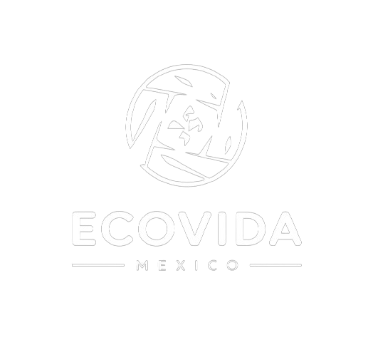
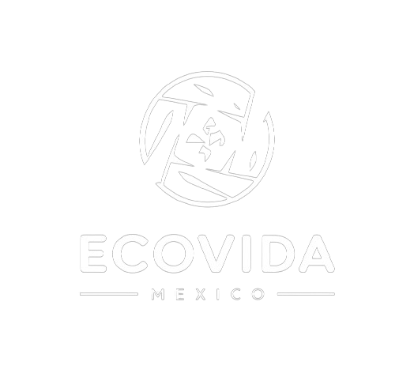

¿Por que es importante reciclar?
Reciclar es crucial por varias razones fundamentales que impactan tanto el medio ambiente como la sociedad.
Aquí te detallo algunas de las razones más importantes:
1. Conservación de Recursos Naturales
Reciclar reduce la necesidad de extraer y procesar materias primas, lo que preserva los recursos naturales como minerales, petróleo, madera y agua. Esto ayuda a mantener los ecosistemas y la biodiversidad, y evita la sobreexplotación de la Tierra.
2. Reducción de la Contaminación
El proceso de reciclaje produce menos contaminación del aire y del agua en comparación con la producción de materiales nuevos. Además, al reciclar, se disminuye la cantidad de basura que se envía a los vertederos e incineradoras, reduciendo así las emisiones de gases de efecto invernadero y otros contaminantes.
3. Ahorro de Energía
La fabricación de productos a partir de materiales reciclados generalmente consume menos energía que la producción desde cero con materias primas vírgenes. Por ejemplo, reciclar aluminio ahorra hasta un 95% de la energía necesaria para producirlo a partir del mineral de bauxita.
4. Reducción de Residuos
Reciclar disminuye la cantidad de residuos que terminan en los vertederos, aliviando la presión sobre estos espacios y prolongando su vida útil. Menos basura en los vertederos también significa menos riesgo de contaminación del suelo y del agua subterránea.